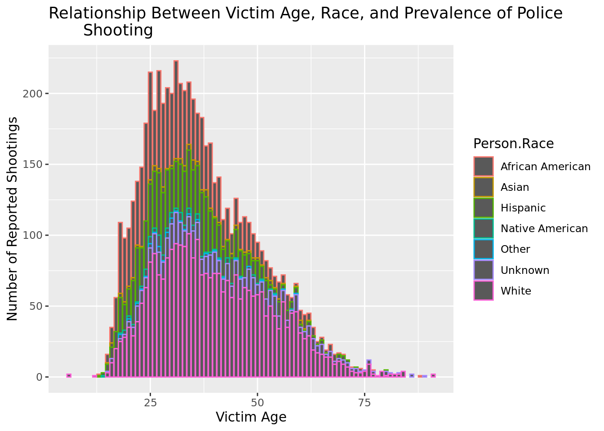
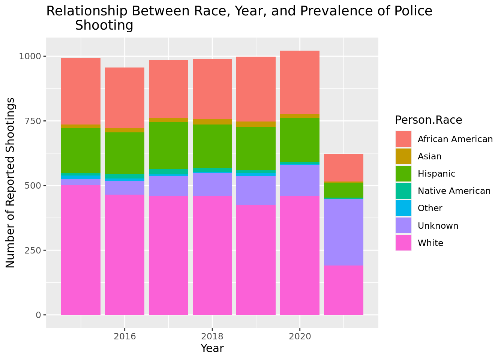
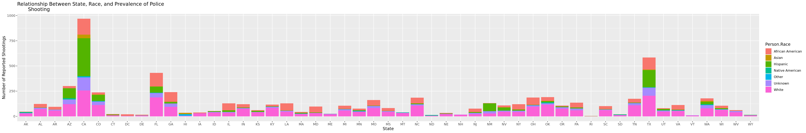

library(tidyverse)
library(tidymodels)
police_shootings <- read_csv("data/police_shootings.csv")Factors Influencing the Prevalence of Police Shootings in the United States
Report
Research Question: How does race, age, location, presence of mental illness, and other factors impact the prevalence of police shootings in the United States?
Introduction/Data
Police shootings have become a pressing issue in many parts of the world, with incidents of excessive use of force by law enforcement officers making headlines and sparking widespread outrage. The consequences of police shootings can be severe, resulting in injury or death for the individuals involved and causing long-lasting trauma for their families and communities. Moreover, the use of lethal force by police can erode public trust in law enforcement and lead to social unrest, protests, and even riots. In recent years, there has been growing recognition of the urgent need to understand the root causes of police shootings and to develop effective strategies for minimizing their occurrence.
A report by The Washington Post found that Black Americans are disproportionately impacted by police use of lethal force. Despite making up only 13% of the US population, Black Americans accounted for 24% of all people killed by police in 2020 (1). Moreover, a study by the Ruderman Family Foundation found that individuals with mental illness are also more likely to be killed by police. In fact, the report found that in some cities, such as Los Angeles, people with mental illness accounted for nearly 40% of all police shootings. Even more, according to data from the National Alliance on Mental Illness (NAMI), approximately 1 in 5 adults in the United States experiences mental illness each year; however, there are significant disparities in mental health outcomes based on race and ethnicity. For example, African Americans and Hispanic Americans are less likely to receive mental health treatment than White Americans. Additionally, research has shown that people of color are more likely to experience mental health challenges due to factors such as discrimination, trauma, and systemic racism (2).
Thus, with our data analysis, we wish to illuminate factors that impact the number of police shootings so that we can target and address ways to minimize the number of dangerous and fatal police shootings. With our research, we aim to answer how race, location, presence of mental illness, and other factors impact the prevalence of police shootings in the United States. For our data analysis, we are using data from the CORGIS Dataset Project collected by Dennis Kafura, Joung Min Choi, and Bo Guan. This information was gathered by the Washington post in a compilation database of every fatal shooting in the United States by a police officer in the line of duty since Jan. 1, 2015. The post gathered the data by using local news reports, law enforcement websites, and social media, as well as monitoring independent databases.
Using the data collected since 2015 until 2022, we can use it to predict trends and determine patterns for factors affecting the number of police shootings in the United States. While The Post conducted additional reporting in many cases, there is still a risk that the data may contain errors or inaccuracies. Moreover, the publication of this dataset could have negative consequences for the families and communities affected by these incidents. Despite these concerns, The Post updated the dataset in 2022 to provide additional information about the police agencies involved in each shooting, which could help measure accountability at the department level. We hypothesize that there is a statistically significant relationship between the race of the victim, the city of the incident, perceived mental illness, and target victim for police shooting. Specifically, we hypothesize that minority races, specifically African Americans, will correlate with a higher level of perceived threat and perceived presence of a mental illness. Important variables that we will consider for our research question include the race of the victim, city as location of the incident, and whether or not the victim has a mental illness.
We hope that our findings will encourage the urgent need to address the intersections of race, mental health, and other factors when it comes to police use of force. It is crucial that law enforcement officers receive proper training in de-escalation techniques and crisis intervention. Additionally, addressing the root causes of mental health disparities and systemic racism is necessary to prevent tragic outcomes and promote equity and justice. This research is crucial not only for protecting the lives and well-being of citizens but also for building stronger, more equitable, and more just societies. By studying police shootings and identifying ways to prevent them, we can work toward a safer, more peaceful future for all.
References
DeAngelis, R. T. (2021). Systemic Racism in Police Killings: New Evidence From the Mapping Police Violence Database, 2013–2021. Race and Justice, 0(0). https://doi.org/10.1177/21533687211047943
“The Washington Post’s Police Shootings Database.” The Washington Post, WP Company LLC, 2021, www.washingtonpost.com/graphics/investigations/police-shootings-database/.
Methodology
We plan to answer our research question by visualizing the relationship between certain factors and the prevalence of police shootings on various plots whilst grouping by race. This will enable us to discern whether certain races when paired with certain factors lead to a higher or lower prevalence of police shootings.
Prediction – We predict that race will have a statistically significant impact on the relationship between various factors and the prevalence of police shootings. Due to factors like racism in the criminal justice system, we hypothesize that certain races will be disproportionately more likely to be victims of police shootings.
Inference – We infer that it will be more difficult to discern the disproportionality of how certain races are affected because we have yet to adjust for the proportion of each race in relation to total population.
police_shootings |>
filter(Person.Age>0) |>
ggplot(aes(x=Person.Age, color = Person.Race)) +
geom_bar() +
labs(title = "Relationship Between Victim Age, Race, and Prevalence of Police
Shooting", x= "Victim Age", y = "Number of Reported Shootings",
legend = "Race")
police_shootings |>
ggplot(aes(x=Incident.Date.Year, fill = Person.Race)) +
geom_bar() +
labs(title = "Relationship Between Race, Year, and Prevalence of Police
Shooting", x= "Year", y = "Number of Reported Shootings",
legend = "Race")
police_shootings |>
ggplot(aes(x = Incident.Location.State, fill = Person.Race)) +
geom_bar() +
labs(title = "Relationship Between State, Race, and Prevalence of Police
Shooting", x= "State", y = "Number of Reported Shootings",
legend = "Race")
police_shootings |>
ggplot(aes(x= Person.Race , fill=Incident.Location.State)) +
geom_bar() + theme(axis.text.x = element_text(angle = 90, vjust = 0.5, hjust=1))
** Results **
– What are you finding out??
We are investigating and determining which of these factors (race, age, location, presence of mental illness) has the most impact on shootings in the United States.
Graph interpretation: The first graph shows the correlation between victim age and number of reported shootings. Victims who are between the ages of 25-37 years appear to experience the highest prevalence of police shootings. Indeed, the number of people between these ages are significantly more affected than people older and younger, indicating that age is an important factor. However, across the whole spectrum of ages, it is also clear that people of African American race are more disproportionately affected, suggesting that race is also a significant factor in determining the prevalence of police shootings.
Graph 2: In our second graph we investigated the relationship between race and shootings more specifically. Just as our last graph indicated, African Americans are significantly affected more by police shootings than any other race, having approximately 1000 shootings per year between 2015-2020. In addition, Asians were not too far behind with 750 shootings per year. It is also worth noting that the total number of shootings fell significantly in 2021, and this was likely in reaction to the Black Lives Matter movement. The number of African Americans who experience police shootings fell most dramatically - this makes sense given that the movement surrounded around the biased shootings towards African Americans. This all suggests that race is a very significant factor in police shootings, more so than age.
Graph 3: The third graph demonstrates that location is a crucial factor when it comes to shootings. White people from the states CO, CT and DC are on average more prone to be targets. IL, ID and IA are also significant states where shootings occur.
– Make sure that this is connected to your research question. It is easy to get excited and explore your data set. Make sure that all results you generate are in-line with the research question you have asked.